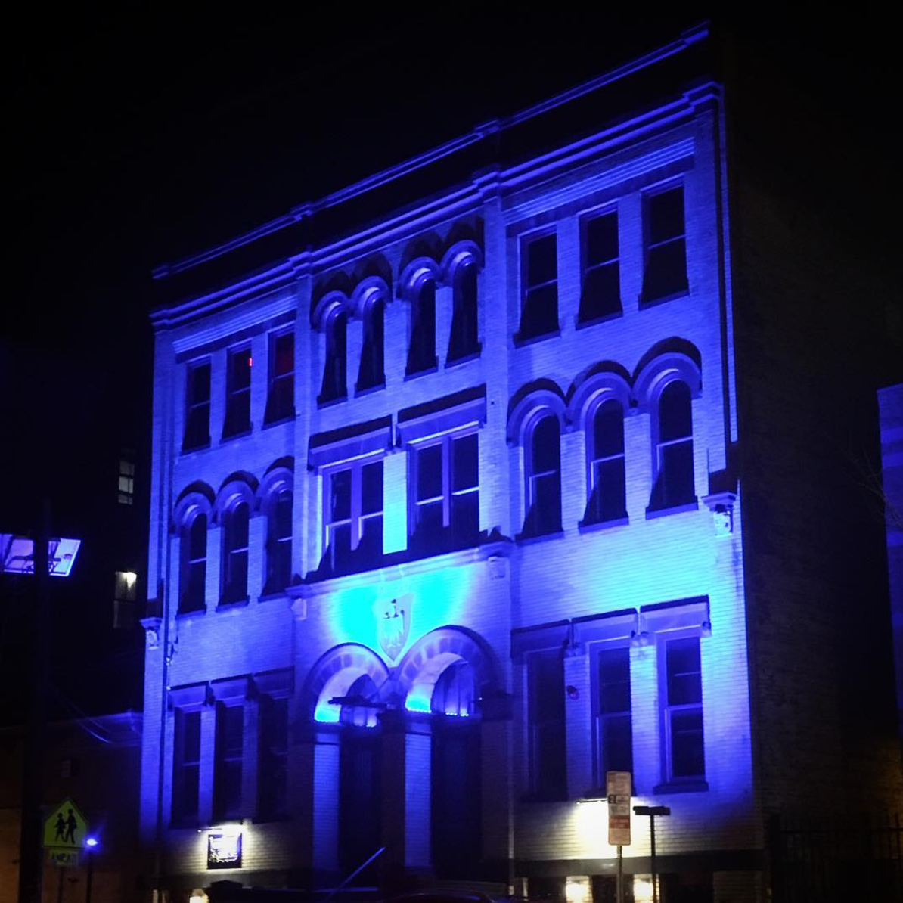

Jersey City has received a lot of nicknames over the years: America’s Golden Door, Chilltown, and most recently, The Sixth Borough. The city’s abundance of restaurants, retail outlets, and music and art festivals have made it a destination for outpriced Manhattanites, sending rent prices soaring and forcing many downtown residents to seek refuge in other neighborhoods. 18,000 new residential units were approved for construction throughout the city in 2015, as well as the opening of 150 small businesses, 50 of which were restaurants. Among the recent uptick in real estate development in Jersey City is White Eagle Hall, a three-story brick building that dominates the western border of the downtown area.
The building (which resides on Newark Avenue, the closest thing Jersey City has to a main drag) was built in 1900 as a theater and cultural center for the city’s abundant Polish community at the time. In recent years it acted as a bingo hall and practice gym for the Saint Anthony’s Friars basketball team. It was purchased by a local couple in 2012, Ben LoPiccolo and Olga Levina, and has undergone a hefty renovation in the four years since.
“One day they walked in and had this visceral feeling and said ‘I have to do something else with this, I can’t just turn this into condos,’” said Diana Arinovich, the couple’s daughter.
Identifying a need for regular arts programming in the neighborhood, LoPiccolo decided to have the space converted into an 800-capacity theater, replete with state-of-the-art sound and lighting equipment and two on-site restaurants. Arinovich is the private events coordinator for the space; Levina (along with Todd Abramson, former co-owner and music booker for Hoboken’s legendary Maxwell’s) will be in charge of the arts programming, which is set to include live music, theater and dance performances, and visual art shows.
Image courtesy of the White Eagle Hall Instagram account, @whiteeaglehalljc
“It’s a family-run business,” said Arinovich, “A lot of people have been getting involved putting this thing together who are locals. We’ve been hearing nothing but excitement from neighbors, from the local government, it’s just been a lot of anticipation.”
Tony Susco - known locally as Dancing Tony - would have to agree. A Jersey City resident for 21 years, Susco books live music acts for just about all of the city’s growing number of outdoor festivals and community events, including the summer music series Groove on Grove and The Ghost of Uncle Joe’s fundraiser that takes place in the historic Harsimus Cemetery.
“About a month ago I had the opportunity to see the finished product, and it’s beautiful” Susco said of White Eagle Hall, which is set to fully reopen this spring. “Size-wise it’s on par with Bowery Ballroom and Music Hall of Williamsburg and it kind of fills a gap that we have here in Jersey City.” Citing the increasing numbers of people moving to the city, Susco emphasized the need for a large-scale events space of this kind: “We need [this space],” he said. “I can’t really see why it wouldn’t be successful.”
In regard to the role White Eagle Hall plays in Jersey City’s status as a destination city, drastically driving up the cost of living, Arinovich assured that this has not been a concern among residents. “We had a meeting in the very beginning when the plans were introduced as to what was going to happen here and people came from all over Jersey City who could raise their concerns,” she said. “There were people who were so excited and eager to see it happen. There are people in the neighborhood who would be so ready to defend it if there were any opposition to it.”
Among such residents is Barbara Hines, who has lived in Jersey City for a total of 26 years since 1987. "I didn't come here as an artist,” she said, “I'm not a working artist, but living here I've met many artists over the years. [I’ve] really supported the arts by attending events and [introducing] our children to the arts through music, film, musical theater, visual arts. It's a draw to the community.”
While Hines was optimistic about White Eagle Hall’s presence in the city, she remained wary about the potential crowds the space was going to attract, saying “I think everything in Jersey City starts out as one thing and eventually becomes something else…it’s just allowing ourselves to wait and not cast it as good or bad.”
"I think it will have to be a mix [of attendees] to be successful,” she continued, referencing the city’s ratio of newcomers to long time residents, “I think there's room for everybody...I hope there's room for everybody.”